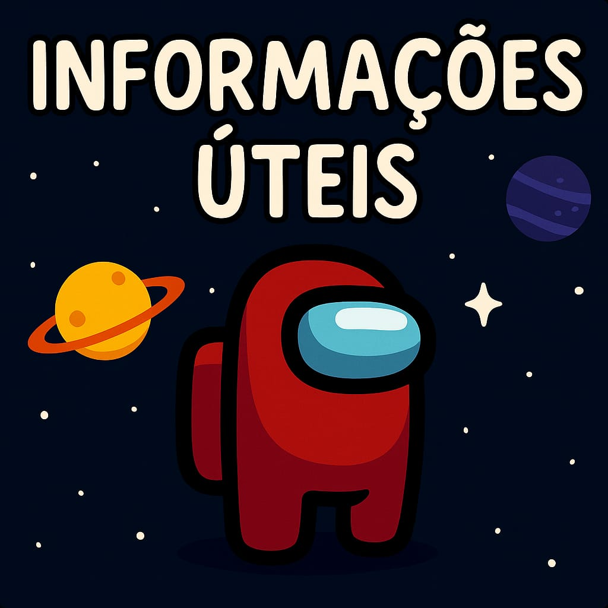
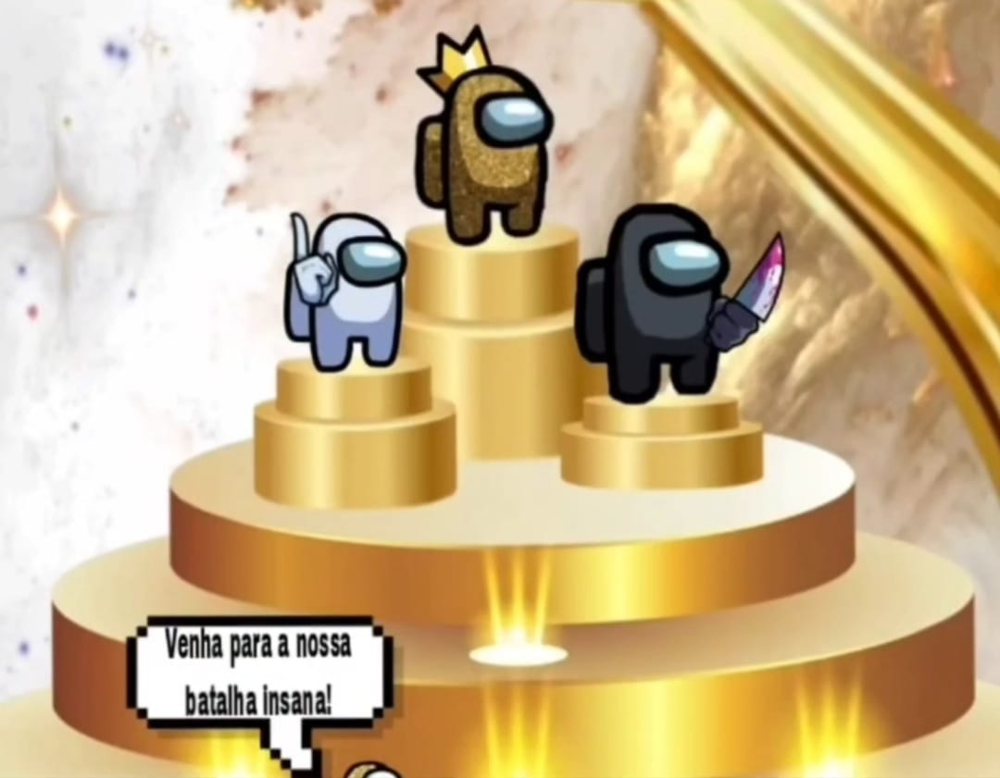

Menu do site
abaixo
abaixo
HOME
Clique aqui para
ser recrutado
👇👇
Área de Recrutamento
Veja como foi a
Criação do Grupo
👇👇
Criação do Modders
Grupos de among br existentes
👇👇
Lista de outros Grupos de Among
Campeonatos, saiba como funciona:
👇👇
Campeonato Modders
Somente Admins

Olá Tripulantes, Sejam muito Bem-viados ao nosso web site, ops, Bem-vindos* 😅
Nesse site irá ter algumas informações sobre o nosso grupo.
Objetivos:
Nosso objetivo é simplesmente reunir jogadores de Among Us em um ambiente descontraído e cheio de galera daora pra conhecer! 😎 Se você for uma pessoa muito séria, então não recomendamos entrar — aqui a zoeira é liberada no grupo do WhatsApp, mas nas partidas levamos a jogabilidade a sério. Organização e diversão andam juntas! 🎮
Campeonatos:
Sempre temos campeonatos no modo esconde, valendo premiação em PIX — sim, isso mesmo que você leu! Damos premiações em PIX para os 3 primeiros do ranking que se destacaram no campeonato! 💰
